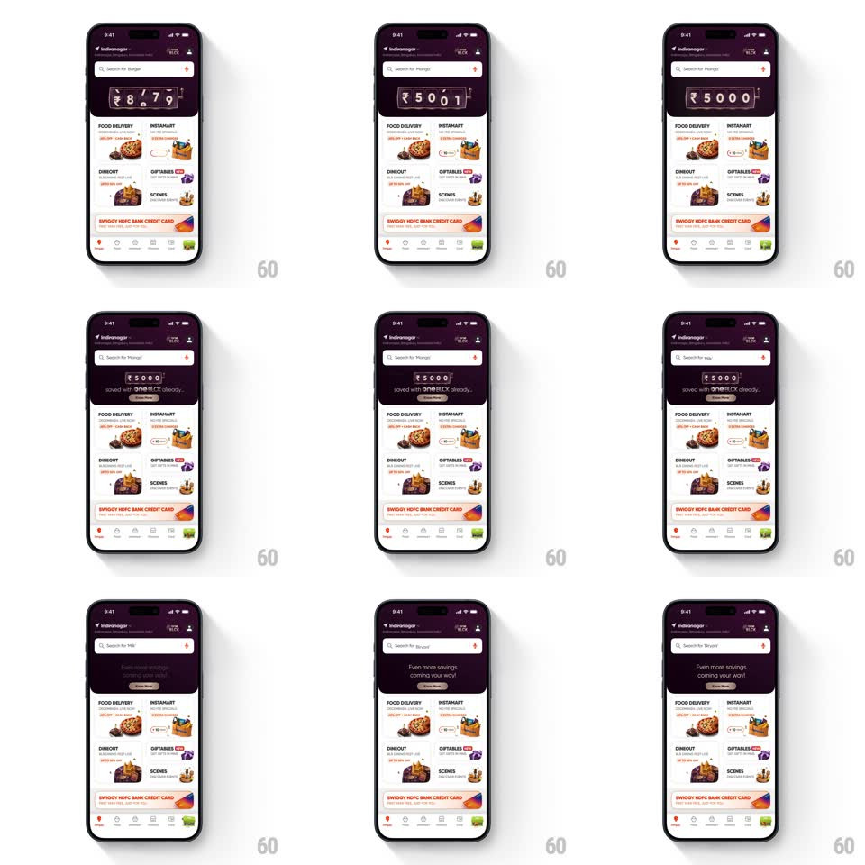

Media
Frame-by-frame

Rebuild this animation 1:1: Swiggy's oneBLCK savings ticker - a slot-machine odometer on the home header rolls from 00000 up to ₹5000, then the "saved with oneBLCK already..." caption and the "Even more savings" tease land.

Rebuild this animation 1:1: Swiggy's oneBLCK savings ticker - a slot-machine odometer on the home header rolls from 00000 up to ₹5000, then the "saved with oneBLCK already..." caption and the "Even more savings" tease land.
## Integration
Integration: stack-agnostic spec - springs given as stiffness/damping, timed motions as duration + curve; map every value to your framework and animation library of choice.
## Scene
Swiggy home with a dark maroon header: location row, search bar, and a mechanical odometer-style counter strip showing "₹5000" in framed digit wheels, with "saved with oneBLCK already..." beneath. Below: the category grid (Food Delivery, Instamart, Dineout, Giftables, Scenes), the HDFC Bank credit card banner, and the tab bar.
## Motion spec
Pattern: slot-machine odometer rolling up to the savings figure.
- The odometer starts at 00000; on screen entry each digit wheel spins with a staggered start (leftmost first, 80ms apart) and decelerates onto its final digit (total roll ~1.4s, cubic ease-out per wheel) - the ₹ prefix and the small crown glyph stay static.
- As the wheels settle, the counter strip gives one mechanical tick bump (translateY 2px, 100ms) like a physical reel locking.
- "saved with oneBLCK already..." fades in under the strip (250ms) once the last wheel lands.
- 400ms later the strip crossfades its caption to the tease "Even more savings coming your way!" (300ms) - the digits stay.
- The rest of the home (search ticker, category grid, banners) runs its own ambient motion and never waits on the odometer.
## Calibration
- Digit wheels have visible frame edges - the mechanical-reel look is the charm; no flat number count-up.
- The roll always lands exactly on the real figure - the deceleration is tuned to end dead-center on each digit, never between two.
## Reduced motion
The figure crossfades from 00000 to ₹5000 (300ms) without wheel spin.
## Don't miss
- The counter lives in the home header, not a modal - it plays inline as the page loads.
- The caption swap ("already saved" -> "even more coming") is the second beat - the ticker alone is not the whole animation.